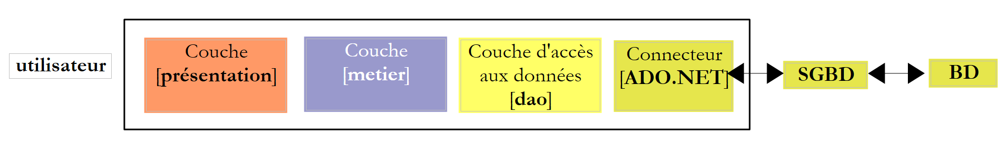
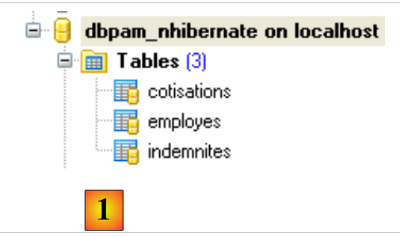
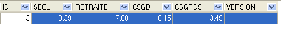
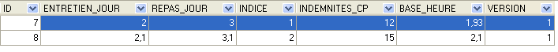
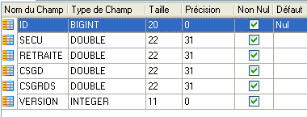

1. Einführung in NHibernate ORM
Das PDF dieses Dokuments ist |HIER| verfügbar.
Die Beispiele im Dokument sind |HIER| verfügbar.
Dieses Dokument ist eine kurze Einführung in NHibernate, das .NET-Äquivalent zum Java-Hibernate-Framework. Eine umfassende Einführung finden Sie unter:
Titel: NHibernate in Action, Autor: Pierre-Henri Kuaté, Verlag: Manning, ISBN-13: 978-1932394924
Ein ORM (Object Relational Mapper) ist eine Sammlung von Bibliotheken, die es einem Programm, das eine Datenbank nutzt, ermöglicht, mit dieser zu interagieren, ohne explizite SQL-Befehle auszuführen und ohne die Besonderheiten des verwendeten DBMS zu kennen.
Voraussetzungen
Auf einer Skala von [Anfänger-Fortgeschrittene-Experten] fällt dieses Dokument in die Kategorie [Fortgeschrittene]. Um es zu verstehen, sind verschiedene Voraussetzungen erforderlich, die in einigen der von mir verfassten Dokumente zu finden sind:
- [Spring IoC], verfügbar unter der URL [Spring IoC für .NET]. Stellt die Grundlagen von Inversion of Control (IoC) oder Dependency Injection (DI) im Spring.NET-Framework vor [Spring.NET | Homepage].
Leseempfehlungen finden sich manchmal am Anfang der Absätze in diesem Dokument. Sie verweisen auf die zuvor genannten Dokumente.
Tools
Die in dieser Fallstudie verwendeten Tools sind im Internet frei verfügbar. Es handelt sich um folgende (Stand: Dezember 2011):
- Nhibernate 3.2, verfügbar unter [http://nhforge.org/Default.aspx]
- Spring.net 1.3.2, verfügbar unter der URL [http://www.springframework.net]. Das Spring.net-Framework ist sehr umfassend. Hier verwenden wir nur die Bibliothek, die es bereitstellt, um die Nutzung des Nhibernate-Frameworks zu erleichtern.
- Log4net 1.2.10, verfügbar unter [http://logging.apache.org/log4net]. Dieses Logging-Framework wird von Nhibernate verwendet.
- NUnit 2.5 ist unter [http://www.nunit.org/] verfügbar. Dieses Unit-Testing-Framework ist das .NET-Äquivalent zum JUnit-Framework für die Java-Plattform.
- Der ADO.NET 6.4.4-Treiber für das DBMS MySQL 5 ist verfügbar unter [http://dev.mysql.com/downloads/connector/net]
Alle für Visual Studio 2010-Projekte erforderlichen DLLs wurden in einem Ordner [libnet4] zusammengestellt:
 |
1.1. Die Rolle von NHIBERNATE in einer mehrschichtigen .NET-Architektur
Eine .NET-Anwendung, die eine Datenbank nutzt, kann wie folgt in Schichten aufgebaut sein:
 |
Die [DAO]-Schicht kommuniziert über die ADO.NET-API mit dem DBMS. Sehen wir uns die wichtigsten Methoden dieser API an.
Im verbundenen Modus führt die Anwendung folgende Schritte aus:
- eine Verbindung zur Datenquelle
- arbeitet mit der Datenquelle im Lese-/Schreibmodus
- schließt die Verbindung
An diesen Vorgängen sind in erster Linie drei ADO.NET-Schnittstellen beteiligt:
- IDbConnection, das die Eigenschaften und Methoden der Verbindung kapselt.
- IDbCommand, das die Eigenschaften und Methoden des ausgeführten SQL-Befehls kapselt.
- IDataReader, das die Eigenschaften und Methoden des Ergebnisses einer SQL-SELECT-Anweisung kapselt.
Die IDbConnection-Schnittstelle
dient zur Verwaltung der Verbindung zur Datenbank. Zu den Methoden M und Eigenschaften P dieser Schnittstelle gehören die folgenden:
Name | Typ | Rolle |
P | Datenbankverbindungszeichenfolge. Sie gibt alle Parameter an, die zum Herstellen einer Verbindung mit einer bestimmten Datenbank erforderlich sind. | |
M | Öffnet die Verbindung zu der durch ConnectionString definierten Datenbank | |
M | Schließt die Verbindung | |
M | Startet eine Transaktion. | |
P | Verbindungsstatus: ConnectionState.Closed, ConnectionState.Open, ConnectionState.Connecting, ConnectionState.Executing, ConnectionState.Fetching, ConnectionState.Broken |
Wenn „Connection“ eine Klasse ist, die die Schnittstelle „IDbConnection“ implementiert, kann die Verbindung wie folgt geöffnet werden:
Die IDbCommand-Schnittstelle
dient zur Ausführung einer SQL-Anweisung oder einer gespeicherten Prozedur. Zu den Methoden M und Eigenschaften P dieser Schnittstelle gehören die folgenden:
Name | Typ | Rolle |
P | gibt an, was ausgeführt werden soll – bezieht seine Werte aus einer Aufzählung: - CommandType.Text: Führt die in der Eigenschaft „CommandText“ definierte SQL-Anweisung aus. Dies ist der Standardwert. - CommandType.StoredProcedure: Führt eine gespeicherte Prozedur in der Datenbank aus | |
P | - der Text der auszuführenden SQL-Anweisung, wenn CommandType= CommandType.Text - der Name der auszuführenden gespeicherten Prozedur, wenn CommandType= CommandType.StoredProcedure | |
P | die IDbConnection-Verbindung, die zur Ausführung der SQL-Anweisung verwendet werden soll | |
P | die IDbTransaction-Transaktion, in der die SQL-Anweisung ausgeführt werden soll | |
P | Die Liste der Parameter für eine parametrisierte SQL-Anweisung. Die Anweisung `update articles set price=price*1.1 where id=@id` enthält den Parameter `@id`. | |
M | Zum Ausführen einer SELECT-SQL-Anweisung. Dies gibt ein IDataReader-Objekt zurück, das das Ergebnis der SELECT-Anweisung darstellt. | |
M | zum Ausführen einer SQL-Anweisung vom Typ „Update“, „Insert“ oder „Delete“. Gibt die Anzahl der von der Operation betroffenen Zeilen zurück (aktualisiert, eingefügt oder gelöscht). | |
M | zum Ausführen einer SQL-Select-Anweisung, die ein einzelnes Ergebnis zurückgibt, z. B.: select count(*) from articles. | |
M | zum Erstellen der IDbParameter-Parameter einer parametrisierten SQL-Anweisung. | |
M | ermöglicht es Ihnen, die Ausführung einer parametrisierten Abfrage zu optimieren, wenn diese mehrfach mit unterschiedlichen Parametern ausgeführt wird. |
Wenn „Command“ eine Klasse ist, die die Schnittstelle „IDbCommand“ implementiert, sieht die Ausführung einer SQL-Anweisung ohne Transaktion wie folgt aus:
Die IDataReader-Schnittstelle
Wird verwendet, um die Ergebnisse einer SQL-Select-Anweisung zu kapseln. Ein IDataReader-Objekt stellt eine Tabelle mit Zeilen und Spalten dar, die nacheinander verarbeitet werden: zuerst die erste Zeile, dann die zweite und so weiter. Zu den Methoden (M) und Eigenschaften (P) dieser Schnittstelle gehören die folgenden:
Name | Typ | Rolle |
P | Die Anzahl der Spalten in der IDataReader-Tabelle | |
M | GetName(i) gibt den Namen der Spalte i in der IDataReader-Tabelle zurück. | |
P | Item[i] steht für die Spaltennummer i der aktuellen Zeile in der IDataReader-Tabelle. | |
M | springt zur nächsten Zeile der IDataReader-Tabelle. Gibt True zurück, wenn der Lesevorgang erfolgreich war, andernfalls False. | |
M | Schließt die IDataReader-Tabelle. | |
M | GetBoolean(i): Gibt den booleschen Wert der Spalte i in der aktuellen Zeile der IDataReader-Tabelle zurück. Weitere ähnliche Methoden sind: GetDateTime, GetDecimal, GetDouble, GetFloat, GetInt16, GetInt32, GetInt64, GetString. | |
M | Getvalue(i): Gibt den Wert der Spalte i in der aktuellen Zeile der IDataReader-Tabelle als Objekttyp zurück. | |
M | IsDBNull(i) gibt „True“ zurück, wenn Spalte i der aktuellen Zeile in der IDataReader-Tabelle keinen Wert enthält, was durch den SQL-NULL-Wert dargestellt wird. |
Die Verwendung eines IDataReader-Objekts sieht häufig wie folgt aus:
In der bisherigen Architektur,
 |
ist der [ADO.NET]-Konnektor mit dem DBMS verbunden. Daher lautet die Klasse, die die [IDbConnection]-Schnittstelle implementiert:
- die Klasse [MySQLConnection] für das DBMS MySQL
- die Klasse [SQLConnection] für das SQLServer-DBMS
Die [DAO]-Schicht ist somit vom verwendeten DBMS abhängig. Einige Frameworks (Linq, Ibatis.net, NHibernate) beseitigen diese Einschränkung, indem sie eine zusätzliche Schicht zwischen der [DAO]-Schicht und dem [ADO.NET]-Konnektor des verwendeten DBMS einfügen. Hier verwenden wir das [NHibernate]-Framework.
 |
In der obigen Abbildung kommuniziert die [DAO]-Schicht nicht mehr mit dem [ADO.NET]-Konnektor, sondern mit dem NHibernate-Framework, das ihr eine vom verwendeten [ADO.NET]-Konnektor unabhängige Schnittstelle bereitstellt. Diese Architektur ermöglicht es Ihnen, das DBMS zu wechseln, ohne die [DAO]-Schicht zu ändern. Es muss lediglich der [ADO.NET]-Konnektor ausgetauscht werden.
1.2. Die Beispieldatenbank
Um die Arbeit mit NHibernate zu veranschaulichen, verwenden wir die folgende MySQL-Datenbank [dbpam_nhibernate]:
 |
- In [1] enthält die Datenbank drei Tabellen:
- [employees]: eine Tabelle, in der die Mitarbeiter einer Kindertagesstätte erfasst sind
- [contributions]: eine Tabelle, in der die Sozialversicherungsbeiträge gespeichert sind
- [payroll]: eine Tabelle, in der Informationen zur Berechnung der Mitarbeitergehälter gespeichert sind
Tabelle [employees]
 |
- In [2] die Tabelle „Mitarbeiter“ und in [3] die Bedeutung ihrer Felder
Der Inhalt der Tabelle könnte wie folgt aussehen:
Tabelle [Beiträge]
 |
- In [4] die Tabelle „Beiträge“ und in [5] die Bedeutung ihrer Felder
Der Inhalt der Tabelle könnte wie folgt aussehen:
 |
Tabelle [indemnites]
 |
- in [6] die Zulagentabelle und in [7] die Bedeutung ihrer Felder
Der Inhalt der Tabelle könnte wie folgt aussehen:
 |
Der Export der Datenbankstruktur in eine SQL-Datei liefert folgendes Ergebnis:
Beachten Sie, dass in den Zeilen 6, 20 und 36 für die Primärschlüssel ID das Attribut *<a id="autoincrement"></a> * auf *autoincrement* gesetzt ist. Das bedeutet, dass MySQL die Primärschlüsselwerte automatisch generiert, sobald ein neuer Datensatz hinzugefügt wird. Der Entwickler muss sich darum keine Gedanken machen.
1.3. Das C#-Demoprojekt
Um die Konfiguration und Verwendung von NHibernate vorzustellen, verwenden wir die folgende Architektur:
 |
Ein Konsolenprogramm [1] wird Daten aus der Datenbank [2] über das [NHibernate]-Framework [3] bearbeiten. Dies führt uns zu folgender Darstellung:
- die NHibernate-Konfigurationsdateien
- die NHibernate-API
Das C#-Projekt wird wie folgt aussehen:
 |
Die für das Projekt erforderlichen Elemente sind wie folgt:
- in [1] die vom Projekt benötigten DLLs:
- [NHibernate]: die NHibernate-Framework-DLL
- [MySql.Data]: die DLL für den ADO.NET-Konnektor des MySQL-DBMS
- [log4net]: die Log4net-Framework-DLL zur Erstellung von Protokollen
- in [2] die Klassen, die die Datenbanktabellen repräsentieren
- in [3] die [App.config]-Datei, die die gesamte Anwendung konfiguriert, einschließlich des [NHibernate]-Frameworks
- in [4], Test-Konsolenanwendungen
1.3.1. Konfigurieren der Datenbankverbindung
Kehren wir zur Testarchitektur zurück:
 |
Wie oben gezeigt, muss [NHibernate] auf die Datenbank zugreifen können. Dazu benötigt es bestimmte Informationen:
- das DBMS, das die Datenbank verwaltet (MySQL, SQL Server, Postgres, Oracle usw.). Die meisten DBMS haben der SQL-Sprache eigene Erweiterungen hinzugefügt. Durch die Kenntnis des DBMS kann NHibernate die von ihm ausgegebenen SQL-Anweisungen an das jeweilige DBMS anpassen. NHibernate nutzt das Konzept der SQL-Dialekte.
- die Datenbankverbindungsparameter (Datenbankname, Benutzername des Verbindungseigentümers und Passwort)
Diese Informationen können in der Konfigurationsdatei [App.config] hinterlegt werden. Hier ist die Datei, die für eine MySQL-5-Datenbank verwendet wird:
<?xml version="1.0" encoding="utf-8" ?>
<configuration>
<!---->
<configSections>
<section name="log4net" type="log4net.Config.Log4NetConfigurationSectionHandler,log4net" />
<section name="hibernate-configuration" type="NHibernate.Cfg.ConfigurationSectionHandler, NHibernate" />
</configSections>
<!---->
<hibernate-configuration xmlns="urn:nhibernate-configuration-2.2">
<session-factory>
<property name="connection.provider">NHibernate.Connection.DriverConnectionProvider</property>
<!-- configuration sections
<property name="connection.driver_class">NHibernate.Driver.MySqlDataDriver</property>
-->
<property name="dialect">NHibernate.Dialect.MySQL5Dialect</property>
<property name="connection.connection_string">
Server=localhost;Database=dbpam_nhibernate;Uid=root;Pwd=;
</property>
<property name="show_sql">false</property>
<mapping assembly="pam-nhibernate-demos"/>
</session-factory>
</hibernate-configuration>
<!-- configuration NHibernate -->
<!-- This section contains the log4net configuration settings
! -->
<log4net>
<!-- NOTE IMPORTANTE: logs are not active by default. They must be activated programmatically with the log4net.Config.XmlConfigurator.Configure() instruction;-->
<appender name="LogFileAppender" type="log4net.Appender.FileAppender, log4net">
<param name="File" value="log.txt" />
<param name="AppendToFile" value="false" />
<layout type="log4net.Layout.PatternLayout, log4net">
<param name="ConversionPattern" value="%d [%t] %-5p %c [%x] <%X{auth}> - %m%n" />
</layout>
</appender>
<appender name="LogDebugAppender" type="log4net.Appender.DebugAppender, log4net">
<layout type="log4net.Layout.PatternLayout, log4net">
<param name="ConversionPattern" value="%d [%t] %-5p %c [%x] <%X{auth}> - %m%n"/>
</layout>
</appender>
<appender name="ConsoleAppender" type="log4net.Appender.ConsoleAppender, log4net">
<layout type="log4net.Layout.PatternLayout, log4net">
<param name="ConversionPattern" value="%d [%t] %-5p %c [%x] <%X{auth}> - %m%n"/>
</layout>
</appender>
<!-- Define an output appender (where the logs can go) -->
<root>
<priority value="INFO" />
<!-- Setup the root category, set the default priority level and add the appender(s) (where the logs will go)
<appender-ref ref="LogFileAppender" />
<appender-ref ref="LogDebugAppender"/>
-->
<appender-ref ref="ConsoleAppender"/>
</root>
<!-- Specify the level for some specific namespaces -->
<!-- Level can be : ALL, DEBUG, INFO, WARN, ERROR, FATAL, OFF -->
<logger name="NHibernate">
<level value="INFO" />
</logger>
</log4net>
</configuration>
- Zeilen 4–7: Definieren Sie Konfigurationsabschnitte in der Datei [App.config]. Betrachten Sie Zeile 6:
<section name="hibernate-configuration" type="NHibernate.Cfg.ConfigurationSectionHandler, NHibernate" />
Diese Zeile definiert den NHibernate-Konfigurationsabschnitt in der Datei [App.config]. Er hat zwei Attribute: name und type.
- Das Attribut [name] benennt den Konfigurationsabschnitt. Dieser Abschnitt muss hier durch die Tags <name>...</name> begrenzt werden, in diesem Fall <hibernate-configuration>...</hibernate-configuration> in den Zeilen 11–24.
- Das Attribut [type=class,DLL] gibt den Namen der Klasse an, die für die Verarbeitung des durch das Attribut [name] definierten Abschnitts zuständig ist, sowie die DLL, die diese Klasse enthält. Hier heißt die Klasse [NHibernate.Cfg.ConfigurationSectionHandler] und befindet sich in der DLL [NHibernate.dll]. Erinnern Sie sich daran, dass diese DLL eine der Referenzen im betrachteten Projekt ist.
Sehen wir uns nun den NHibernate-Konfigurationsabschnitt an:
<!-- configuration NHibernate -->
<hibernate-configuration xmlns="urn:nhibernate-configuration-2.2">
<session-factory>
<property name="connection.provider">NHibernate.Connection.DriverConnectionProvider</property>
<!--
<property name="connection.driver_class">NHibernate.Driver.MySqlDataDriver</property>
-->
<property name="dialect">NHibernate.Dialect.MySQL5Dialect</property>
<property name="connection.connection_string">
Server=localhost;Database=dbpam_nhibernate;Uid=root;Pwd=;
</property>
<property name="show_sql">false</property>
<mapping assembly="pam-nhibernate-demos"/>
</session-factory>
</hibernate-configuration>
- Zeile 2: Die NHibernate-Konfiguration ist in einem <hibernate-configuration>-Tag enthalten. Das Attribut xmlns (XML-Namespace) gibt die zur Konfiguration von NHibernate verwendete Version an. Im Laufe der Zeit hat sich die Art und Weise, wie NHibernate konfiguriert wird, weiterentwickelt. Hier wird Version 2.2 verwendet.
- Zeile 3: Die gesamte NHibernate-Konfiguration ist im <session-factory>-Tag enthalten (Zeilen 3 und 14). Eine NHibernate-Sitzung ist das Werkzeug, mit dem gemäß dem Schema mit einer Datenbank gearbeitet wird:
- Sitzung öffnen
- Arbeiten mit der Datenbank unter Verwendung von NHibernate-API-Methoden
- close session
Die Sitzung wird von einer Factory erstellt, einem Oberbegriff für eine Klasse, die Objekte erstellen kann. Die Zeilen 3–14 konfigurieren diese Factory.
- Zeilen 4, 6, 8, 9: Konfigurieren die Verbindung zur Zieldatenbank. Zu den wichtigsten Informationen gehören der Name des verwendeten DBMS, der Datenbankname, die Benutzer-ID und das Passwort.
- Zeile 4: Definiert den Verbindungsanbieter, also die Entität, über die eine Verbindung zur Datenbank angefordert wird. Der Wert der Eigenschaft [connection.provider] ist der Name einer NHibernate-Klasse. Diese Eigenschaft ist unabhängig vom verwendeten DBMS.
- Zeile 6: Der zu verwendende ADO.NET-Treiber. Dies ist der Name einer NHibernate-Klasse, die für ein bestimmtes DBMS spezialisiert ist, in diesem Fall MySQL. Zeile 6 wurde auskommentiert, da sie nicht unbedingt erforderlich ist.
- Zeile 8: Die Eigenschaft [dialect] legt den SQL-Dialekt fest, der mit dem DBMS verwendet werden soll. Hier handelt es sich um den MySQL-DBMS-Dialekt.
Wenn Sie das DBMS wechseln, wie finden Sie den entsprechenden NHibernate-Dialekt? Kehren Sie zum vorherigen C#-Projekt zurück und doppelklicken Sie auf die [NHibernate]-DLL auf der Registerkarte [Referenzen]:
 |
- In [1] werden auf der Registerkarte [Objekt-Explorer] eine Reihe von DLLs angezeigt, darunter auch diejenigen, auf die das Projekt verweist.
- In [2] die [NHibernate]-DLL
- In [3] die [NHibernate]-DLL. Hier sehen Sie die verschiedenen darin definierten Namespaces.
- in [4] der Namespace [NHibernate.Dialect], in dem Sie die Klassen finden, die die verschiedenen verwendbaren SQL-Dialekte definieren.
- in [5] die Dialektklasse für das DBMS MySQL 5.
 |
- in [6] den Namespace der Klasse [MySqlDataDriver], die in Zeile 6 unten verwendet wird:
<!-- configuration NHibernate -->
<hibernate-configuration xmlns="urn:nhibernate-configuration-2.2">
<session-factory>
<property name="connection.provider">NHibernate.Connection.DriverConnectionProvider</property>
<!--
<property name="connection.driver_class">NHibernate.Driver.MySqlDataDriver</property>
-->
<property name="dialect">NHibernate.Dialect.MySQLDialect</property>
<property name="connection.connection_string">
Server=localhost;Database=dbpam_nhibernate;Uid=root;Pwd=;
</property>
<property name="show_sql">false</property>
<mapping assembly="pam-nhibernate-demos"/>
</session-factory>
</hibernate-configuration>
- Zeilen 9–11: Die Datenbankverbindungszeichenfolge. Diese Zeichenfolge hat das Format „param1=val1;param2=val2; ...“. Die so definierten Parameter ermöglichen es dem DBMS-Treiber, eine Verbindung herzustellen. Das Format dieser Verbindungszeichenfolge hängt vom verwendeten DBMS ab. Verbindungszeichenfolgen für die gängigsten DBMS finden Sie auf der Website [http://www.connectionstrings.com/]. Hier ist die Zeichenfolge „Server=localhost;Database=dbpam_nhibernate;Uid=root;Pwd=;“ eine Verbindungszeichenfolge für das MySQL-DBMS. Sie gibt Folgendes an:
- Server=localhost; : Das DBMS befindet sich auf demselben Rechner wie der Client, der versucht, die Verbindung herzustellen
- Database=dbpam_nhibernate; : die Ziel-MySQL-Datenbank
- Uid=root; : Der Benutzer, der die Verbindung herstellt, ist der Root-Benutzer
- Pwd=; : Dieser Benutzer hat kein Passwort (ein Sonderfall in diesem Beispiel)
- Zeile 12: Die Eigenschaft [show_sql] legt fest, ob NHibernate die SQL-Anweisungen, die es an die Datenbank sendet, in seinen Protokollen anzeigen soll. Während der Entwicklung ist es sinnvoll, diese Eigenschaft auf [true] zu setzen, um genau zu sehen, was NHibernate tut.
- Zeile 13: Um das <mapping>-Tag zu verstehen, schauen wir uns noch einmal die Architektur der Anwendung an:
 |
Wäre das Konsolenprogramm ein direkter Client des ADO.NET-Konnektors und wollte es die Liste der Mitarbeiter abrufen, würde es den Konnektor dazu veranlassen, eine SQL-SELECT-Anweisung auszuführen, und als Rückgabe ein IDataReader-Objekt erhalten, das es verarbeiten müsste, um die ursprünglich gewünschte Liste der Mitarbeiter zu erhalten.
Im obigen Beispiel ist das Konsolenprogramm der Client von NHibernate, und NHibernate ist der Client des ADO.NET-Konnektors. Wir werden später sehen, dass die NHibernate-API es dem Konsolenprogramm ermöglicht, die Liste der Mitarbeiter anzufordern. NHibernate übersetzt diese Anfrage in eine SQL-SELECT-Anweisung, die es vom ADO.NET-Konnektor ausführen lässt. Der Connector gibt ein Objekt vom Typ IDataReader zurück. Aus diesem Objekt muss NHibernate in der Lage sein, die angeforderte Liste der Mitarbeiter zu erstellen. Dies wird durch die Konfiguration ermöglicht. Jede Tabelle in der Datenbank ist einer C#-Klasse zugeordnet. Auf der Grundlage der vom IDataReader zurückgegebenen Zeilen aus der Tabelle [employees] kann NHibernate somit eine Liste von Objekten erstellen, die Mitarbeiter repräsentieren, und diese an das Konsolenprogramm zurückgeben. Diese Zuordnungen von Tabellen zu Klassen werden in Konfigurationsdateien definiert. NHibernate verwendet den Begriff „Mapping“, um diese Beziehungen zu beschreiben.
Kehren wir zu Zeile 13 unten zurück:
<!-- configuration NHibernate -->
<hibernate-configuration xmlns="urn:nhibernate-configuration-2.2">
<session-factory>
<property name="connection.provider">NHibernate.Connection.DriverConnectionProvider</property>
<!--
<property name="connection.driver_class">NHibernate.Driver.MySqlDataDriver</property>
-->
<property name="dialect">NHibernate.Dialect.MySQL5Dialect</property>
<property name="connection.connection_string">
Server=localhost;Database=dbpam_nhibernate;Uid=root;Pwd=;
</property>
<property name="show_sql">false</property>
<mapping assembly="pam-nhibernate-demos"/>
</session-factory>
</hibernate-configuration>
Zeile 13 gibt an, dass sich die Konfigurationsdateien für die Zuordnung von Tabellen zu Klassen in der Assembly [pam-nhibernate-demos] befinden. Eine Assembly ist die ausführbare Datei oder DLL, die durch die Kompilierung eines Projekts entsteht. Hier werden die Zuordnungsdateien in der Assembly des Beispielprojekts abgelegt. Um den Namen dieser Assembly zu ermitteln, überprüfen Sie die Projekteigenschaften:
 |
- in [1], die Projekteigenschaften
- auf der Registerkarte [Anwendung] [2] den Namen der Assembly [3], die generiert wird.
- Da der Ausgabetyp [Konsolenanwendung] [4] ist, erhält die beim Kompilieren des Projekts generierte Datei den Namen [pam-nhibernate-demos.exe]. Wäre der Ausgabetyp [Klassenbibliothek] [5], würde die beim Kompilieren des Projekts generierte Datei den Namen [pam-nhibernate-demos.dll] erhalten
- Die Assembly wird im Ordner [bin/Release] des Projekts [6] generiert.
Beachten Sie aus der vorangegangenen Erläuterung, dass die Zuordnungstabelle <--> Klassendateien in der Datei [pam-nhibernate-demos.exe] [6] enthalten sein muss.
1.3.2. Konfigurieren der <-->Klassen-Zuordnungstabelle
Kehren wir zur Architektur des betrachteten Projekts zurück:
 |
- In [1] nutzt das Konsolenprogramm die Methoden der NHibernate-Framework-API. Diese beiden Blöcke tauschen Objekte aus.
- In [2] nutzt NHibernate die API eines .NET-Konnektors. Es sendet SQL-Befehle an das Ziel-DBMS.
Das Konsolenprogramm bearbeitet Objekte, die die Datenbanktabellen widerspiegeln. In diesem Projekt wurden diese Objekte und die Verknüpfungen, die sie mit den Datenbanktabellen verbinden, im folgenden Ordner [Entities] abgelegt:
 |
- Jede Datenbanktabelle entspricht einer Klasse und einer Zuordnungsdatei zwischen beiden
Tabelle | Tabelle | Zuordnung |
Beiträge | MembershipFees.cs | Beiträge.hbm.xml |
Mitarbeiter | Mitarbeiter.cs | Mitarbeiter.hbm.xml |
Zulagen | Zulagen.cs | Zulagen.hbm.xml |
1.3.2.1. Zuordnung der Tabelle [contributions]
Betrachten wir die Tabelle [contributions]:
 |
|
Eine Zeile in dieser Tabelle kann wie folgt in ein Objekt vom Typ [ Cotisations.cs] gekapselt werden:
namespace PamNHibernateDemos {
public class Cotisations {
// automatic properties
public virtual int Id { get; set; }
public virtual int Version { get; set; }
public virtual double CsgRds { get; set; }
public virtual double Csgd { get; set; }
public virtual double Secu { get; set; }
public virtual double Retraite { get; set; }
// manufacturers
public Cotisations() {
}
// ToString
public override string ToString() {
return string.Format("[{0}|{1}|{2}|{3}]", CsgRds, Csgd, Secu, Retraite);
}
}
}
Wir haben für jede Spalte in der Tabelle [contributions] eine Auto-Eigenschaft erstellt. Jede dieser Eigenschaften muss als virtuell deklariert werden, da NHibernate die Klasse ableitet und ihre Eigenschaften überschreibt. Daher müssen diese Eigenschaften virtuell sein.
Beachten Sie in Zeile 1, dass die Klasse zum Namespace [PamNHibernateDemos] gehört.
Die Zuordnungsdatei [Cotisations.hbm.xml] zwischen der Tabelle [cotisations] und der Klasse [Cotisations] sieht wie folgt aus:
<?xml version="1.0" encoding="utf-8" ?>
<hibernate-mapping xmlns="urn:nhibernate-mapping-2.2"
namespace="PamNHibernateDemos" assembly="pam-nhibernate-demos">
<class name="Cotisations" table="COTISATIONS">
<id name="Id" column="ID" unsaved-value="0">
<generator class="native" />
</id>
<version name="Version" column="VERSION"/>
<property name="CsgRds" column="CSGRDS"/>
<property name="Csgd" column="CSGD"/>
<property name="Retraite" column="RETRAITE"/>
<property name="Secu" column="SECU"/>
</class>
</hibernate-mapping>
- Die Mapping-Datei ist eine XML-Datei, die innerhalb des <hibernate-mapping>-Tags definiert ist (Zeilen 2 und 14)
- Zeile 4: Das <class>-Tag verknüpft eine Datenbanktabelle mit einer Klasse. Hier die Tabelle [COTISATIONS] (Tabellenattribut) und die Klasse [Cotisations] (Namensattribut). In .NET muss eine Klasse durch ihren vollständigen Namen (einschließlich des Namespace) und durch die Assembly, die sie enthält, definiert werden. Diese beiden Informationen werden in Zeile 3 bereitgestellt. Die erste (Namespace) findet sich in der Klassendefinition. Die zweite (Assembly) ist der Name der Assembly des Projekts. Wir haben bereits erklärt, wie man diesen Namen findet.
- Zeilen 5–7: Das <id>-Tag wird verwendet, um die Zuordnung des Primärschlüssels aus der Tabelle [contributions] zu definieren.
- Zeile 5: Das Attribut „name“ gibt das Feld in der Klasse [Cotisations] an, das den Primärschlüssel der Tabelle [cotisations] enthält. Das Attribut „column“ gibt die Spalte in der Tabelle [cotisations] an, die als Primärschlüssel dient. Das Attribut „unsaved-value“ wird verwendet, um einen Primärschlüssel zu definieren, der noch nicht generiert wurde. Anhand dieses Werts weiß NHibernate, wie ein [Cotisations]-Objekt in der Tabelle [cotisations] gespeichert werden muss. Wenn dieses Objekt ein Id-Feld hat, das auf 0 gesetzt ist, führt es eine SQL-INSERT-Operation durch; andernfalls führt es eine SQL-UPDATE-Operation durch. Der Wert von unsaved-value hängt vom Typ des Id-Feldes in der Klasse [Cotisations] ab. Hier ist es vom Typ int, und der Standardwert für einen int-Typ ist 0. Ein [Cotisations]-Objekt, das noch nicht gespeichert wurde (und daher keinen Primärschlüssel hat), hat somit ein Id-Feld, das auf 0 gesetzt ist. Wäre das Id-Feld vom Typ Object oder einem abgeleiteten Typ, hätten wir unsaved-value=null geschrieben.
- Zeile 6: Wenn NHibernate ein [Cotisations]-Objekt mit einem auf 0 gesetzten Id-Feld speichern muss, muss es eine INSERT-Operation in der Datenbank durchführen, bei der es einen Wert für den Primärschlüssel des Datensatzes erhalten muss. Die meisten DBMS verfügen über eine proprietäre Methode zur automatischen Generierung dieses Werts. Das <generator>-Tag wird verwendet, um den Mechanismus zu definieren, der zur Generierung des Primärschlüssels verwendet werden soll. Das <generator class="native">-Tag gibt an, dass der Standardmechanismus des verwendeten DBMS verwendet werden soll. In Abschnitt 1.2 haben wir gesehen, dass die Primärschlüssel unserer drei MySQL-Tabellen das Attribut „autoincrement“ hatten. Während seiner INSERT-Operationen stellt NHibernate keinen Wert für die ID-Spalte des hinzugefügten Datensatzes bereit, sodass MySQL diesen Wert generieren kann.
- Zeile 8: Das <version>-Tag dient dazu, die Tabellenspalte (sowie das entsprechende Klassenfeld) zu definieren, die eine „Versionierung“ der Datensätze ermöglicht. Zu Beginn ist die Version auf 1 gesetzt. Sie wird bei jeder UPDATE-Operation erhöht. Darüber hinaus wird jeder UPDATE- oder DELETE-Vorgang mit einer WHERE-Klausel ausgeführt: ID=id AND VERSION=v1. Ein Benutzer kann daher ein Objekt nur ändern oder löschen, wenn er über die richtige Version davon verfügt. Ist dies nicht der Fall, löst NHibernate eine Ausnahme aus.
- Zeile 9: Das <property>-Tag wird verwendet, um eine normale Spaltenzuordnung zu definieren (weder eine Primärschlüssel- noch eine Versionsspalte). Somit gibt Zeile 9 an, dass die Spalte CSGRDS der Tabelle [COTISATIONS] der Eigenschaft CsgRds der Klasse [Cotisations] zugeordnet ist.
1.3.2.2. Zuordnung der Tabelle [indemnites]
Betrachten wir die Tabelle [indemnites]:
 |
|
Eine Zeile in dieser Tabelle kann wie folgt in ein Objekt vom Typ [ Indemnites] gekapselt werden:
namespace PamNHibernateDemos {
public class Indemnites {
// automatic properties
public virtual int Id { get; set; }
public virtual int Version { get; set; }
public virtual int Indice { get; set; }
public virtual double BaseHeure { get; set; }
public virtual double EntretienJour { get; set; }
public virtual double RepasJour { get; set; }
public virtual double IndemnitesCp { get; set; }
// manufacturers
public Indemnites() {
}
// identity
public override string ToString() {
return string.Format("[{0}|{1}|{2}|{3}|{4}]", Indice, BaseHeure, EntretienJour, RepasJour, IndemnitesCp);
}
}
}
Die Mapping-Datei für die Tabelle [indemnites] <--> Klasse [Indemnites] könnte wie folgt aussehen (Indemnites.hbm.xml):
<?xml version="1.0" encoding="utf-8" ?>
<hibernate-mapping xmlns="urn:nhibernate-mapping-2.2"
namespace="PamNHibernateDemos" assembly="pam-nhibernate-demos">
<class name="Indemnites" table="INDEMNITES">
<id name="Id" column="ID" unsaved-value="0">
<generator class="native" />
</id>
<version name="Version" column="VERSION"/>
<property name="Indice" column="INDICE" unique="true"/>
<property name="BaseHeure" column="BASE_HEURE" />
<property name="EntretienJour" column="ENTRETIEN_JOUR" />
<property name="RepasJour" column="REPAS_JOUR" />
<property name="IndemnitesCp" column="INDEMNITES_CP" />
</class>
</hibernate-mapping>
Hier gibt es nichts Neues im Vergleich zu der zuvor erläuterten Mapping-Datei. Der einzige Unterschied befindet sich in Zeile 9. Das Attribut unique="true" gibt an, dass für die Spalte [INDICE] in der Tabelle [indemnites] eine Eindeutigkeitsbeschränkung gilt: Es darf keine zwei Zeilen mit demselben Wert für die Spalte [INDICE] geben.
1.3.2.3. Mapping der Tabelle [employes]
Betrachten wir nun die Tabelle [employes]:
 |
|
Die Neuerung gegenüber den bisherigen Tabellen ist das Vorhandensein eines Fremdschlüssels: Die Spalte [INDEMNITE_ID] ist ein Fremdschlüssel auf die Spalte [ID] der Tabelle [INDEMNITES]. Dieses Feld verweist auf die Zeile in der Tabelle [INDEMNITES], die zur Berechnung der Zulagen des Mitarbeiters herangezogen wird.
Die Klasse [ Employe], die die Tabelle [employes] repräsentiert, könnte wie folgt aussehen:
namespace PamNHibernateDemos {
public class Employe {
// automatic properties
public virtual int Id { get; set; }
public virtual int Version { get; set; }
public virtual string SS { get; set; }
public virtual string Nom { get; set; }
public virtual string Prenom { get; set; }
public virtual string Adresse { get; set; }
public virtual string Ville { get; set; }
public virtual string CodePostal { get; set; }
public virtual Indemnites Indemnites { get; set; }
// manufacturers
public Employe() {
}
// ToString
public override string ToString() {
return string.Format("[{0}|{1}|{2}|{3}|{4}|{5}|{6}]", SS, Nom, Prenom, Adresse, Ville, CodePostal, Indemnites);
}
}
}
Die Mapping-Datei [Employee.hbm.xml] könnte wie folgt aussehen:
<?xml version="1.0" encoding="utf-8" ?>
<hibernate-mapping xmlns="urn:nhibernate-mapping-2.2"
namespace="PamNHibernateDemos" assembly="pam-nhibernate-demos">
<class name="Employe" table="EMPLOYES">
<id name="Id" column="ID" unsaved-value="0">
<generator class="native" />
</id>
<version name="Version" column="VERSION"/>
<property name="SS" column="SS"/>
<property name="Nom" column="NOM"/>
<property name="Prenom" column="PRENOM"/>
<property name="Adresse" column="ADRESSE"/>
<property name="Ville" column="VILLE"/>
<property name="CodePostal" column="CP"/>
<many-to-one name="Indemnites" column="INDEMNITE_ID" cascade="save-update" lazy="false"/>
</class>
</hibernate-mapping>
Die neue Funktion befindet sich in Zeile 15 mit der Einführung eines neuen Tags: <many-to-one>. Dieses Tag wird verwendet, um eine Fremdschlüsselspalte [INDEMNITE_ID] aus der Tabelle [EMPLOYEES] der Eigenschaft [Benefits] der Klasse [Employee] zuzuordnen:
namespace PamNHibernateDemos {
public class Employe {
// automatic properties
..
public virtual Indemnites Indemnites { get; set; }
...
}
}
Die Tabelle [EMPLOYEES] enthält einen Fremdschlüssel [INDEMNITY_ID], der auf die Spalte [ID] in der Tabelle [INDEMNITIES] verweist. Mehrere (viele) Zeilen in der Tabelle [EMPLOYEES] können auf eine einzige (eine) Zeile in der Tabelle [BENEFITS] verweisen. Daher der Name des Tags <many-to-one>. Dieses Tag hat hier die folgenden Attribute:
- column: gibt den Namen der Spalte in der Tabelle [EMPLOYEES] an, die als Fremdschlüssel in der Tabelle [BENEFITS] dient
- name: gibt die Eigenschaft der Klasse [Employee] an, die dieser Spalte zugeordnet ist. Der Typ dieser Eigenschaft muss die Klasse sein, die der Zieltabelle des Fremdschlüssels zugeordnet ist, in diesem Fall die Tabelle [Compensation]. Wir wissen, dass es sich bei dieser Klasse um die bereits beschriebene Klasse [Indemnites] handelt. Dies spiegelt sich in Zeile 5 oben wider. Das bedeutet, dass NHibernate beim Abrufen eines [Employee]-Objekts aus der Datenbank auch das entsprechende [Indemnites]-Objekt abruft.
- cascade: Dieses Attribut kann verschiedene Werte annehmen:
- save-update: Eine Einfüge- (save) oder Aktualisierungsoperation am [Employee]-Objekt muss auf das darin enthaltene [Benefits]-Objekt übertragen werden.
- delete: Das Löschen eines [Employee]-Objekts muss auf das darin enthaltene [Benefits]-Objekt übertragen werden.
- all: Leitet Einfüge- (Speichern), Aktualisierungs- und Löschvorgänge weiter.
- none: Es wird nichts weitergegeben.
Schauen wir uns zum Schluss die NHibernate-Konfiguration in der Datei [App.config] an:
<!-- configuration NHibernate -->
<hibernate-configuration xmlns="urn:nhibernate-configuration-2.2">
<session-factory>
<property name="connection.provider">NHibernate.Connection.DriverConnectionProvider</property>
<!--
<property name="connection.driver_class">NHibernate.Driver.MySqlDataDriver</property>
-->
<property name="dialect">NHibernate.Dialect.MySQL5Dialect</property>
<property name="connection.connection_string">
Server=localhost;Database=dbpam_nhibernate;Uid=root;Pwd=;
</property>
<property name="show_sql">false</property>
<mapping assembly="pam-nhibernate-demos"/>
</session-factory>
</hibernate-configuration>
Zeile 13 gibt an, dass die *.hbm.xml-Mapping-Dateien in der Assembly [pam-nhibernate-demos] zu finden sind. Dies ist nicht das Standardverhalten. Sie müssen dies im C#-Projekt konfigurieren:
 |
- Wählen Sie in [1] die Eigenschaften einer Zuordnungsdatei
- in [2] muss die Generierungsaktion [Embedded Resource] [3] lauten. Das bedeutet, dass die Mapping-Datei bei der Generierung des Projekts in die generierte Assembly eingebettet werden muss.
1.4. Die NHibernate-API
Kehren wir zur Architektur unseres Beispielprojekts zurück:
 |
In den vorangegangenen Abschnitten haben wir NHibernate auf zwei Arten konfiguriert:
- In [App.config] haben wir die Datenbankverbindung konfiguriert
- für jede Tabelle in der Datenbank, haben wir die Klasse geschrieben, die diese Tabelle repräsentiert, sowie die Mapping-Datei, die es uns ermöglicht, zwischen der Klasse und der Tabelle und umgekehrt zu konvertieren.
Wir müssen uns noch mit den von NHibernate angebotenen Methoden zur Bearbeitung von Datenbankdaten befassen: Einfügen, Aktualisieren, Löschen und Auflisten.
1.4.1. Das SessionFactory-Objekt
Jeder NHibernate-Vorgang findet innerhalb einer Sitzung statt. Eine typische Abfolge von NHibernate-Vorgängen sieht wie folgt aus:
- Öffnen einer NHibernate-Sitzung
- Starten einer Transaktion innerhalb der Sitzung
- Persistenzoperationen mit der Sitzung ausführen (Load, Get, Find, CreateQuery, Save, SaveOrUpdate, Delete)
- die Transaktion festschreiben oder zurücksetzen
- die NHibernate-Sitzung schließen
Eine Sitzung wird von einer [SessionFactory]-Factory bezogen. Diese Factory ist diejenige, die durch das <session-factory>-Tag in der Konfigurationsdatei [App.config] konfiguriert wird:
<!-- configuration NHibernate -->
<hibernate-configuration xmlns="urn:nhibernate-configuration-2.2">
<session-factory>
<property name="connection.provider">NHibernate.Connection.DriverConnectionProvider</property>
<!--
<property name="connection.driver_class">NHibernate.Driver.MySqlDataDriver</property>
-->
<property name="dialect">NHibernate.Dialect.MySQL5Dialect</property>
<property name="connection.connection_string">
Server=localhost;Database=dbpam_nhibernate;Uid=root;Pwd=;
</property>
<property name="show_sql">false</property>
<mapping assembly="pam-nhibernate-demos"/>
</session-factory>
</hibernate-configuration>
Im C#-Code kann die SessionFactory wie folgt abgerufen werden:
ISessionFactory sessionFactory = new Configuration().Configure().BuildSessionFactory();
Die Configuration-Klasse ist eine Klasse im NHibernate-Framework. Die vorstehende Anweisung nutzt den NHibernate-Konfigurationsabschnitt in [App.config]. Das resultierende [ISessionFactory]-Objekt verfügt dann über die:
- Informationen zum Herstellen einer Verbindung zur Zieldatenbank
- Mapping-Dateien zwischen Datenbanktabellen und persistenten Klassen, die von NHibernate verwaltet werden.
1.4.2. Die NHibernate-Sitzung
Sobald die SessionFactory erstellt wurde (dies geschieht nur einmal), können Sie die Sitzungen abrufen, die zur Durchführung von NHibernate-Persistenzoperationen benötigt werden. Ein gängiger Codeausschnitt lautet wie folgt:
try{
// session opening
using (ISession session = sessionFactory.OpenSession())
{
// start of transaction
using (ITransaction transaction = session.BeginTransaction())
{
........................ opérations de persistance
// transaction validation
transaction.Commit();
}
}
}catch (Exception ex){
....
}
- Zeile 3: Innerhalb eines „using“-Blocks wird über die SessionFactory eine Sitzung erstellt. Wenn der „using“-Block endet, wird die Sitzung automatisch geschlossen. Ohne den „using“-Block müsste die Sitzung explizit geschlossen werden (session.Close()).
- Zeile 6: Persistenzoperationen werden innerhalb einer Transaktion ausgeführt. Entweder sind alle erfolgreich oder keine. Innerhalb des „using“-Blocks wird die Transaktion mit einem „Commit“ (Zeile 10) bestätigt. Wenn eine Persistenzoperation innerhalb der Transaktion eine Ausnahme auslöst, wird die Transaktion beim Verlassen des „using“-Blocks automatisch zurückgesetzt.
- Die try/catch-Blöcke in den Zeilen 1 und 13 ermöglichen das Abfangen aller Ausnahmen, die vom Code innerhalb des try-Blocks (Sitzung, Transaktion, Persistenz) ausgelöst werden.
1.4.3. Die ISession-Schnittstelle
Wir stellen nun einige der Methoden der ISession-Schnittstelle vor, die von einer NHibernate-Sitzung implementiert werden:
startet eine Transaktion in der Sitzung ITransaction tx = session.BeginTransaction(); | |
löscht die Sitzung. Die darin enthaltenen Objekte werden getrennt. session.Clear(); | |
Schließt die Sitzung. Die darin enthaltenen Objekte werden mit der Datenbank synchronisiert. Dieser Synchronisierungsvorgang wird auch am Ende einer Transaktion durchgeführt. Letzteres ist der häufigste Fall. session.Close(); | |
erstellt eine HQL-Abfrage (Hibernate Query Language) zur späteren Ausführung. IQuery query = session.createQuery("select e from Employee e"); | |
löscht ein Objekt. Dieses Objekt kann zur Sitzung gehören (angeschlossen) oder nicht (getrennt). Wenn die Sitzung mit der Datenbank synchronisiert wird, wird für dieses Objekt eine SQL-DELETE-Operation ausgeführt. // einen Mitarbeiter aus der Datenbank laden Employee e = session.Get<Employee>(143); // Löschen session.Delete(e); | |
Erzwingt die Synchronisierung der Sitzung mit der Datenbank. Der Inhalt der Sitzung ändert sich nicht. session.Flush(); | |
ruft das Objekt T mit dem Primärschlüssel id aus der Datenbank ab. Wenn dieses Objekt nicht existiert, wird ein Null-Zeiger zurückgegeben. // Einen Mitarbeiter aus der Datenbank laden Employee e = session.Get<Employee>(143); | |
fügt das Objekt obj zur Sitzung hinzu. Dieses Objekt hat vor dem Speichern keinen Primärschlüssel. Nach dem Speichern hat es einen. Wenn die Sitzung synchronisiert wird, wird eine SQL-INSERT-Operation in der Datenbank ausgeführt. // Einen Mitarbeiter anlegen Employee e = new Employee(){...}; // Speichern e = session.Save(e); | |
Führt einen Speichervorgang durch, wenn „obj“ keinen Primärschlüssel hat, oder einen Aktualisierungsvorgang, wenn bereits einer vorhanden ist. | |
aktualisiert das Objekt obj in der Datenbank. Anschließend wird ein SQL-UPDATE-Vorgang in der Datenbank ausgeführt. // Einen Mitarbeiter aus der Datenbank laden Employee e = session.Get<Employee>(143); // Namen ändern e.Name = ...; // Den Mitarbeiter in der Datenbank aktualisieren session.Update(e); |
1.4.4. Die IQuery-Schnittstelle
Die IQuery-Schnittstelle ermöglicht es Ihnen, die Datenbank abzufragen, um Daten zu extrahieren. Wir haben gesehen, wie man eine Instanz davon erstellt:
Der Parameter der createQuery-Methode ist eine HQL-Abfrage (Hibernate Query Language), eine Sprache, die SQL ähnelt, jedoch Klassen statt Tabellen abfragt. Die obige Abfrage ruft eine Liste aller Mitarbeiter ab. Hier sind einige Beispiele für HQL-Abfragen:
select e from Employe e where e.Nom like 'A%'
select e from Employe order by e.Nom asc
select e from Employe e where e.Indemnites.Indice=2
Wir stellen nun einige der Methoden der IQuery-Schnittstelle vor:
gibt das Ergebnis der Abfrage als Liste von T-Objekten zurück IList<Employee> employees = session.createQuery("select e from Employee e order by e.Name asc").List<Employee>(); | |
gibt das Abfrageergebnis als Liste zurück, wobei jedes Listenelement eine Zeile aus der SELECT-Abfrage in Form eines Objektarrays darstellt. IList rows = session.createQuery("select e.LastName, e.FirstName, e.SS from Employee e").List(); lines[i][j] stellt die Spalte j der Zeile i als Objekt dar. Somit ist lines[10][1] ein Objekt, das den Vornamen einer Person darstellt. In der Regel ist eine Typumwandlung erforderlich, um die Daten in ihrem genauen Typ abzurufen. | |
gibt das erste Objekt aus dem Abfrageergebnis zurück Employee e = session.createQuery("select e from Employee e where e.LastName='MARTIN'").UniqueResult<Employee>(); |
Eine HQL-Abfrage kann parametrisiert werden:
In der HQL-Abfrage in Zeile 3 ist :num ein Parameter, dem vor der Ausführung der Abfrage ein Wert zugewiesen werden muss. Oben wird hierfür die SetString-Methode verwendet. Die IQuery-Schnittstelle bietet verschiedene Set-Methoden, um einem Parameter einen Wert zuzuweisen:
- - SetBoolean(string name, bool value)
- - SetSingle(string name, single value)
- - SetDouble(string name, double value)
- - SetInt32(string name, int32 value)
- ..
1.5. Einige Code-Beispiele
Die folgenden Beispiele basieren auf der zuvor besprochenen und unten zusammengefassten Architektur. Als Datenbank dient die ebenfalls vorgestellte MySQL-Datenbank [dbpam_nhibernate]. Bei den Beispielen handelt es sich um Konsolenprogramme [1], die das NHibernate-Framework [3] zur Bearbeitung der Datenbank [2] verwenden.
 |
Das C#-Projekt, das die folgenden Beispiele enthält, ist das bereits vorgestellte:
 |
- in [1], die vom Projekt benötigten DLLs:
- [NHibernate]: die NHibernate-Framework-DLL
- [MySql.Data]: die DLL für den ADO.NET-Konnektor für das DBMS MySQL 5
- [log4net]: die DLL für ein Logging-Tool
- in [2] die Klassen, die die Datenbanktabellen repräsentieren
- in [3] die [App.config]-Datei, die die gesamte Anwendung konfiguriert, einschließlich des [NHibernate]-Frameworks
- in [4], Test-Konsolenanwendungen. Diese werden wir im Folgenden vorstellen.
1.5.1. Abrufen des Datenbankinhalts
Das Programm [ShowDataBase.cs] zeigt den Datenbankinhalt an:
using System;
using System.Collections;
using System.Collections.Generic;
using NHibernate;
using NHibernate.Cfg;
namespace PamNHibernateDemos
{
public class ShowDataBase
{
private static ISessionFactory sessionFactory = null;
// main program
static void Main(string[] args)
{
// factory initialization NHibernate
sessionFactory = new Configuration().Configure().BuildSessionFactory();
try
{
// database content display
Console.WriteLine("Affichage base -------------------------------------");
ShowDataBase1();
}
catch (Exception ex)
{
// we display the exception
Console.WriteLine(string.Format("L'erreur suivante s'est produite : [{0}]", ex.ToString()));
}
finally
{
if (sessionFactory != null)
{
sessionFactory.Close();
}
}
// keyboard wait
Console.ReadLine();
}
// test1
static void ShowDataBase1()
{
// session opening
using (ISession session = sessionFactory.OpenSession())
{
// start of transaction
using (ITransaction transaction = session.BeginTransaction())
{
// retrieve the list of employees
IList<Employe> employes = session.CreateQuery(@"select e from Employe e order by e.Nom asc").List<Employe>();
// we display it
Console.WriteLine("--------------- liste des employés");
foreach (Employe e in employes)
{
Console.WriteLine(e);
}
// retrieve the list of benefits
IList<Indemnites> indemnites = session.CreateQuery(@"select i from Indemnites i order by i.Indice asc").List<Indemnites>();
// we display it
Console.WriteLine("--------------- liste des indemnités");
foreach (Indemnites i in indemnites)
{
Console.WriteLine(i);
}
// retrieve the list of contributions
Cotisations cotisations = session.CreateQuery(@"select c from Cotisations c").UniqueResult<Cotisations>();
Console.WriteLine("--------------- tableau des taux de cotisations");
Console.WriteLine(cotisations);
// commit transaction
transaction.Commit();
}
}
}
}
}
Erläuterungen:
- Zeile 19: Das SessionFactory-Objekt wird erstellt. Damit können wir Session-Objekte abrufen.
- Zeile 24: Der Inhalt der Datenbank wird angezeigt
- Zeilen 31–37: Die SessionFactory wird in der finally-Klausel des try-Blocks geschlossen.
- Zeile 43: Die Methode, die den Datenbankinhalt anzeigt
- Zeile 46: Wir beziehen eine Session von der SessionFactory.
- Zeile 49: Eine Transaktion wird gestartet
- Zeile 52: HQL-Abfrage zum Abrufen der Liste der Mitarbeiter. Aufgrund des Fremdschlüssels, der die Entität „Employee“ mit der Entität „Compensation“ verknüpft, verfügt jeder Mitarbeiter über eine Vergütung.
- Zeile 60: HQL-Abfrage zum Abrufen der Liste der Zulagen.
- Zeile 68: HQL-Abfrage zum Abrufen der einzelnen Zeile aus der Tabelle „contributions“.
- Zeile 72: Ende der Transaktion
- Zeile 73: Ende von `using ITransaction` aus Zeile 49 – die Transaktion wird automatisch geschlossen
- Zeile 74: Ende des `using Isession` aus Zeile 46 – die Sitzung wird automatisch geschlossen.
Bildschirmanzeige:
Beachten Sie, dass in den Zeilen 3 und 4 bei der Abfrage nach einem Mitarbeiter auch dessen Vergütung zurückgegeben wurde.
1.5.2. Einfügen von Daten in die Datenbank
Mit dem Programm [FillDataBase.cs] können Sie Daten in die Datenbank einfügen:
using System;
using System.Collections;
using System.Collections.Generic;
using NHibernate;
using NHibernate.Cfg;
namespace PamNHibernateDemos
{
public class FillDataBase
{
private static ISessionFactory sessionFactory = null;
// main program
static void Main(string[] args)
{
// factory initialization NHibernate
sessionFactory = new Configuration().Configure().BuildSessionFactory();
try
{
// delete database contents
Console.WriteLine("Effacement base -------------------------------------");
ClearDataBase1();
Console.WriteLine("Affichage base -------------------------------------");
ShowDataBase();
Console.WriteLine("Remplissage base -------------------------------------");
FillDataBase1();
Console.WriteLine("Affichage base -------------------------------------");
ShowDataBase();
}
catch (Exception ex)
{
// exception is displayed
Console.WriteLine(string.Format("L'erreur suivante s'est produite : [{0}]", ex.ToString()));
}
finally
{
if (sessionFactory != null)
{
sessionFactory.Close();
}
}
// keyboard wait
Console.ReadLine();
}
// test1
static void ShowDataBase()
{
// see previous example
}
// ClearDataBase1
static void ClearDataBase1()
{
// session opening
using (ISession session = sessionFactory.OpenSession())
{
// start of transaction
using (ITransaction transaction = session.BeginTransaction())
{
// retrieve the list of employees
IList<Employe> employes = session.CreateQuery(@"select e from Employe e").List<Employe>();
// we cut all employees
Console.WriteLine("--------------- suppression des employés associés");
foreach (Employe e in employes)
{
session.Delete(e);
}
// retrieve the list of allowances
IList<Indemnites> indemnites = session.CreateQuery(@"select i from Indemnites i").List<Indemnites>();
// we do away with allowances
Console.WriteLine("--------------- suppression des indemnités");
foreach (Indemnites i in indemnites)
{
session.Delete(i);
}
// retrieve the list of contributions
Cotisations cotisations = session.CreateQuery(@"select c from Cotisations c").UniqueResult<Cotisations>();
Console.WriteLine("--------------- suppression des taux de cotisations");
if (cotisations != null)
{
session.Delete(cotisations);
}
// commit transaction
transaction.Commit();
}
}
}
// FillDataBase
static void FillDataBase1()
{
// session opening
using (ISession session = sessionFactory.OpenSession())
{
// start of transaction
using (ITransaction transaction = session.BeginTransaction())
{
// two allowances are created
Indemnites i1 = new Indemnites() { Id = 0, Indice = 1, BaseHeure = 1.93, EntretienJour = 2, RepasJour = 3, IndemnitesCp = 12 };
Indemnites i2 = new Indemnites() { Id = 0, Indice = 2, BaseHeure = 2.1, EntretienJour = 2.1, RepasJour = 3.1, IndemnitesCp = 15 };
// we create two employees
Employe e1 = new Employe() { Id = 0, SS = "254104940426058", Nom = "Jouveinal", Prenom = "Marie", Adresse = "5 rue des oiseaux", Ville = "St Corentin", CodePostal = "49203", Indemnites = i1 };
Employe e2 = new Employe() { Id = 0, SS = "260124402111742", Nom = "Laverti", Prenom = "Justine", Adresse = "La Brûlerie", Ville = "St Marcel", CodePostal = "49014", Indemnites = i2 };
// we create the contribution rates
Cotisations cotisations = new Cotisations() { Id = 0, CsgRds = 3.49, Csgd = 6.15, Secu = 9.39, Retraite = 7.88 };
// save it all
session.Save(e1);
session.Save(e2);
session.Save(cotisations);
// commit transaction
transaction.Commit();
}
}
}
}
}
Erläuterungen
- Zeile 19: Die SessionFactory wird erstellt
- Zeilen 37–43: Sie wird innerhalb der `finally`-Klausel des `try`-Blocks geschlossen
- Zeile 55: Die Methode `ClearDataBase1`, die die Datenbank löscht. Der Vorgang läuft wie folgt ab:
- Wir holen alle Mitarbeiter (Zeile 64) in eine Liste
- Wir löschen sie nacheinander (Zeilen 67–70)
- Zeile 93: Die Methode `FillDataBase1` fügt einige Daten in die Datenbank ein
- wir erstellen zwei Indemnites-Entitäten (Zeilen 102, 103)
- wir erstellen zwei Mitarbeiter mit diesen Zulagen (Zeilen 105, 106)
- Wir erstellen in Zeile 108 ein „Cotisations“-Objekt.
- Zeilen 110, 111: Die beiden „Employee“-Entitäten werden in der Datenbank gespeichert
- Zeile 112: Die Entität „Cotisations“ wird ebenfalls gespeichert
- Es mag überraschend erscheinen, dass die „Indemnities“-Entitäten in den Zeilen 102 und 103 nicht gespeichert wurden. Tatsächlich wurden sie jedoch gleichzeitig mit den „Employee“-Entitäten gespeichert. Um dies zu verstehen, müssen wir uns die Zuordnung der „Employee“-Entität ansehen:
<?xml version="1.0" encoding="utf-8" ?>
<hibernate-mapping xmlns="urn:nhibernate-mapping-2.2"
namespace="PamNHibernateDemos" assembly="pam-nhibernate-demos">
<class name="Employe" table="EMPLOYES">
<id name="Id" column="ID" unsaved-value="0">
<generator class="native" />
</id>
<version name="Version" column="VERSION"/>
<property name="SS" column="SS"/>
<property name="Nom" column="NOM"/>
<property name="Prenom" column="PRENOM"/>
<property name="Adresse" column="ADRESSE"/>
<property name="Ville" column="VILLE"/>
<property name="CodePostal" column="CP"/>
<many-to-one name="Indemnites" column="INDEMNITE_ID" cascade="save-update" lazy="false"/>
</class>
</hibernate-mapping>
Zeile 15, die die Fremdschlüsselbeziehung zwischen der Entität „Employee“ und der Entität „Allowances“ abbildet, enthält das Attribut cascade="save-update". Dies bedeutet, dass „Save“- und „Update“-Operationen an der Entität „Employee“ an die interne Entität „Allowances“ weitergegeben werden.
Erhaltene Bildschirmanzeige:
Effacement base -------------------------------------
--------------- suppression des employés et des indemnités associées
--------------- suppression des indemnités restantes
--------------- suppression des taux de cotisations
Affichage base -------------------------------------
--------------- liste des employés
--------------- liste des indemnités
--------------- tableau des taux de cotisations
Remplissage base -------------------------------------
Affichage base -------------------------------------
--------------- liste des employés
[254104940426058|Jouveinal|Marie|5 rue des oiseaux|St Corentin|49203|[2|2,1|2,1|3,1|15]]
[260124402111742|Laverti|Justine|La Brûlerie|St Marcel|49014|[1|1,93|2|3|12]]
--------------- liste des indemnités
[1|1,93|2|3|12]
[2|2,1|2,1|3,1|15]
--------------- tableau des taux de cotisations
[3,49|6,15|9,39|7,88]
[3.49|6.15|9.39|7.88]
1.5.3. Suche nach einem Mitarbeiter
Das Programm [Program.cs] enthält verschiedene Methoden, die zeigen, wie man auf Datenbankdaten zugreift und diese bearbeitet. Wir stellen hier einige davon vor.
Mit der Methode [FindEmployee] können Sie einen Mitarbeiter anhand seiner Sozialversicherungsnummer suchen:
// FindEmployee
static void FindEmployee() {
try {
// session opening
using (ISession session = sessionFactory.OpenSession()) {
// start of transaction
using (ITransaction transaction = session.BeginTransaction()) {
// search for an employee using his SS number
String numSecu = "254104940426058";
IQuery query = session.CreateQuery(@"select e from Employe e where e.SS=:numSecu");
Employe employe = query.SetString("numSecu", numSecu).UniqueResult<Employe>();
if (employe != null) {
Console.WriteLine("Employe[" + numSecu + "]=" + employe);
} else {
Console.WriteLine("Employe[" + numSecu + "] non trouvé...");
}
numSecu = "xx";
employe = query.SetString("numSecu", numSecu).UniqueResult<Employe>();
if (employe != null) {
Console.WriteLine("Employe[" + numSecu + "]=" + employe);
} else {
Console.WriteLine("Employe[" + numSecu + "] non trouvé...");
}
// commit transaction
transaction.Commit();
}
}
} catch (Exception e) {
Console.WriteLine("L'exception suivante s'est produite : " + e.Message);
}
}
Erläuterungen
- Zeile 10: Die von numSecu konfigurierte Select-Abfrage, die ausgeführt werden soll
- Zeile 11: Zuweisung eines Werts an den Parameter numSecu und Ausführung der Methode UniqueResult, um ein einzelnes Ergebnis zurückzugeben.
Erhaltene Bildschirmanzeige:
Recherche d'un employé -------------------------------------
Employe[254104940426058]=[254104940426058|Jouveinal|Marie|5 rue des oiseaux|St Corentin|49203|[2|2,1|2,1|3,1|15]]
Employe[xx] non trouvé...
1.5.4. Einfügen ungültiger Entitäten
Die folgende Methode versucht, eine nicht initialisierte [Employee]-Entität zu speichern.
// SaveEmptyEmployee
static void SaveEmptyEmployee() {
try {
// session opening
using (ISession session = sessionFactory.OpenSession()) {
// start of transaction
using (ITransaction transaction = session.BeginTransaction()) {
// create an empty employee
Employe e = new Employe();
// we create a non-existent indemnity
Indemnites i = new Indemnites() { Id = 0, Indice = 3, BaseHeure = 1.93, EntretienJour = 2, RepasJour = 3, IndemnitesCp = 12 };
// associated with the employee
e.Indemnites = i;
// save the employee, leaving the other fields empty
session.Save(e);
// commit transaction
transaction.Commit();
}
}
} catch (Exception e) {
Console.WriteLine("L'exception suivante s'est produite : " + e.Message);
}
}
Erläuterungen
Sehen wir uns den Code für die Klasse [Employee] noch einmal an:
namespace PamNHibernateDemos {
public class Employe {
// automatic properties
public virtual int Id { get; set; }
public virtual int Version { get; set; }
public virtual string SS { get; set; }
public virtual string Nom { get; set; }
public virtual string Prenom { get; set; }
public virtual string Adresse { get; set; }
public virtual string Ville { get; set; }
public virtual string CodePostal { get; set; }
public virtual Indemnites Indemnites { get; set; }
// manufacturers
public Employe() {
}
// ToString
public override string ToString() {
return string.Format("[{0}|{1}|{2}|{3}|{4}|{5}|{6}]", SS, Nom, Prenom, Adresse, Ville, CodePostal, Indemnites);
}
}
}
Ein nicht initialisiertes [Employee]-Objekt weist für alle seine Zeichenfolgenfelder den Wert null auf. Beim Einfügen des Datensatzes in die Tabelle [employees] lässt NHibernate die diesen Feldern entsprechenden Spalten leer. In der Tabelle [employees] haben jedoch alle Spalten das Attribut „not null“, wodurch verhindert wird, dass Spalten keinen Wert haben. Der ADO.NET-Treiber löst daraufhin eine Ausnahme aus:
1.5.5. Erstellen von zwei Zulagen mit demselben Index innerhalb einer Transaktion
In der Tabelle [indemnites] wurde die Spalte [index] mit dem Attribut „unique“ deklariert, wodurch verhindert wird, dass zwei Zeilen denselben Index haben. Die folgende Methode erstellt zwei Zulagen mit demselben Index innerhalb einer Transaktion:
// CreateIndemnites1
static void CreateIndemnites1() {
try {
// session opening
using (ISession session = sessionFactory.OpenSession()) {
// start of transaction
using (ITransaction transaction = session.BeginTransaction()) {
// we create two allowances with the same index
Indemnites i1 = new Indemnites() { Id = 0, Indice = 1, BaseHeure = 1.93, EntretienJour = 2, RepasJour = 3, IndemnitesCp = 12 };
Indemnites i2 = new Indemnites() { Id = 0, Indice = 1, BaseHeure = 1.93, EntretienJour = 2, RepasJour = 3, IndemnitesCp = 12 };
// we save them
session.Save(i1);
session.Save(i2);
// commit transaction
transaction.Commit();
}
}
} catch (Exception e) {
Console.WriteLine("L'exception suivante s'est produite : " + e.Message);
}
}
Erläuterungen
- In den Zeilen 9 und 10 werden zwei Indemnites-Entitäten mit demselben Index erstellt. In der Datenbank unterliegt die Spalte INDEX jedoch der UNIQUE-Einschränkung.
- In den Zeilen 12 und 13 werden die beiden „Indemnites“-Entitäten in den Persistenzkontext aufgenommen. Dieser Kontext wird mit der Datenbank synchronisiert, wenn die Transaktion in Zeile 15 festgeschrieben wird. Diese Synchronisierung löst zwei INSERT-Anweisungen aus. Die zweite davon löst aufgrund der Eindeutigkeitsbeschränkung für die Spalte „INDEX“ eine Ausnahme aus. Da wir uns innerhalb einer Transaktion befinden, wird die erste INSERT-Anweisung zurückgesetzt.
Das Ergebnis lautet wie folgt:
Zeile 9: Wir sehen, dass die Tabelle [indemnites] leer ist. Es wurden keine Einträge vorgenommen.
1.5.6. Erstellen von zwei Zulagen mit demselben Index ohne Transaktion
Die folgende Methode erstellt zwei Zulagen mit demselben Index ohne Verwendung einer Transaktion:
// CreateIndemnites2
static void CreateIndemnites2() {
try {
// session opening
using (ISession session = sessionFactory.OpenSession()) {
// we create two allowances with the same index
Indemnites i1 = new Indemnites() { Id = 0, Indice = 1, BaseHeure = 1.93, EntretienJour = 2, RepasJour = 3, IndemnitesCp = 12 };
Indemnites i2 = new Indemnites() { Id = 0, Indice = 1, BaseHeure = 1.94, EntretienJour = 2, RepasJour = 3, IndemnitesCp = 12 };
// we save them
session.Save(i1);
session.Save(i2);
}
} catch (Exception e) {
Console.WriteLine("L'exception suivante s'est produite : " + e.Message);
}
}
Erläuterungen
- Wir haben denselben Code wie zuvor, jedoch ohne Transaktion.
- Die Synchronisierung des Persistenzkontexts mit der Datenbank erfolgt, wenn dieser Kontext geschlossen wird, in Zeile 13 (Schließen der Session). Die Synchronisierung löst zwei INSERT-Anweisungen aus. Die zweite schlägt aufgrund der Eindeutigkeitsbeschränkung für die Spalte INDICE fehl. Da wir uns jedoch nicht in einer Transaktion befinden, wird die erste INSERT-Anweisung nicht zurückgesetzt.
Das Ergebnis lautet wie folgt:
Die Datenbank war vor der Ausführung der Methode leer. In Zeile 6 sehen wir, dass die Tabelle [indemnites] eine Zeile enthält.